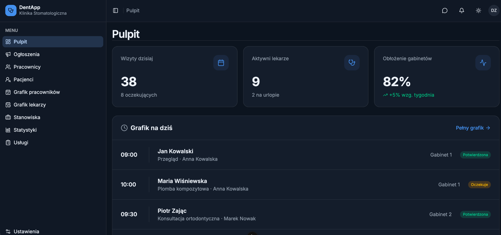
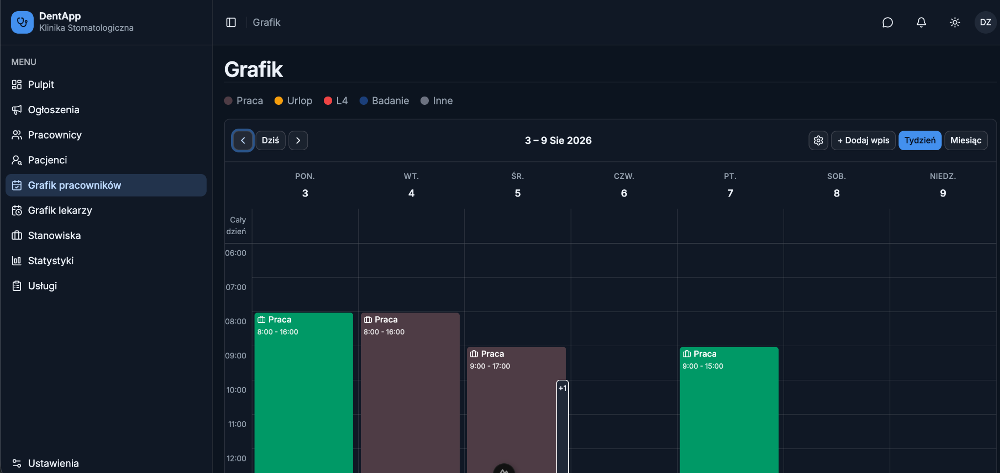
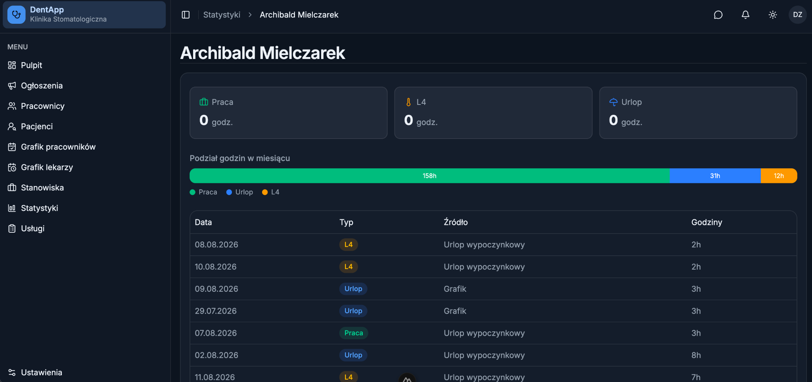
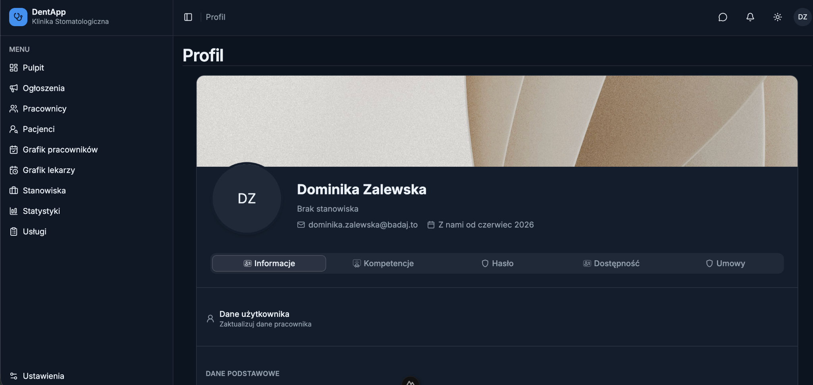
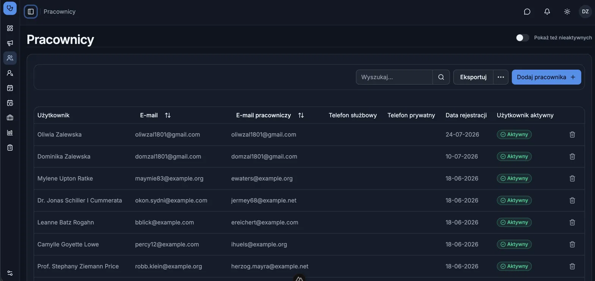

A web application for managing a dental clinic, focused on organizing employees, schedules, patients and clinic statistics.
DentApp is a clinic management application designed to provide a clear and centralized interface for managing day-to-day clinic operations.
The application includes dedicated views for:
The main dashboard provides an overview of the clinic, including today's appointments, active doctors, clinic utilization and the daily schedule.

A weekly schedule view for organizing employee working hours, holidays and other types of schedule entries.

A statistics view presenting employee working time and its breakdown into work, holidays and leave.

A detailed employee profile containing personal information and dedicated sections for employee-related data.

Example of a structured data management view used within the application.

The project follows a modular frontend structure with reusable components and Nuxt 3 conventions.
Install dependencies:
npm install
Start the development server:
npm run dev
The application will be available at:
http://localhost:3000
Dominika Zalewska
Fullstack Developer — PHP/Laravel, Vue 3/Nuxt 3, TypeScript